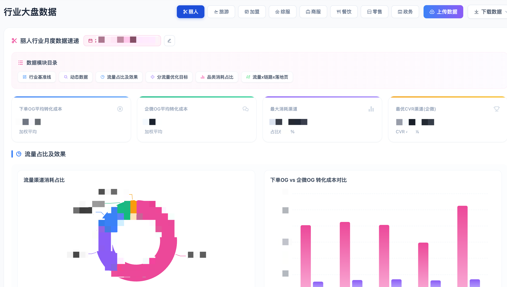
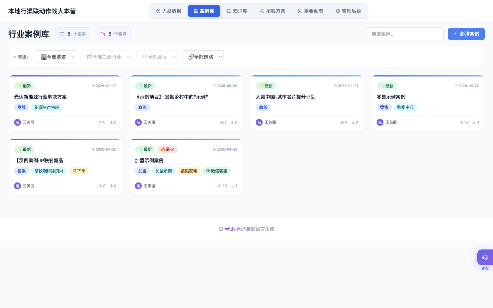
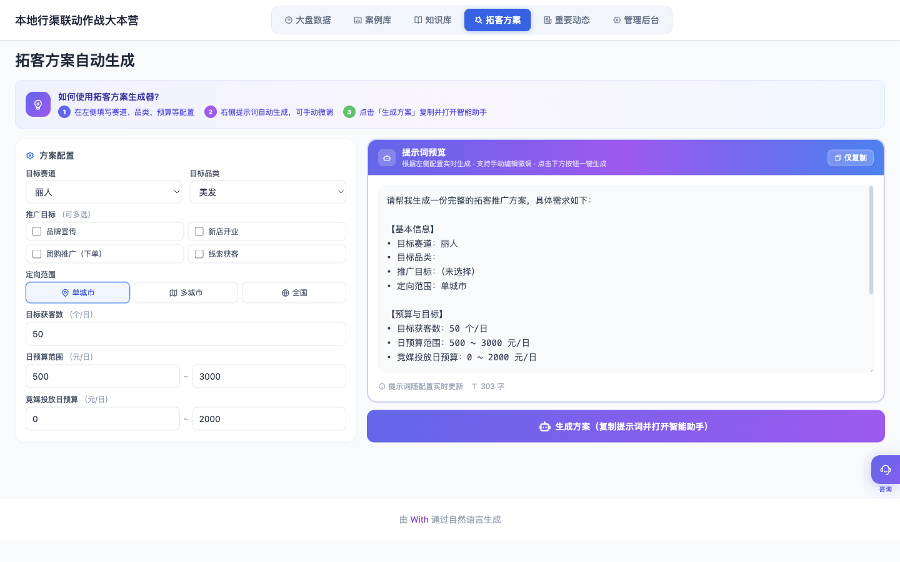
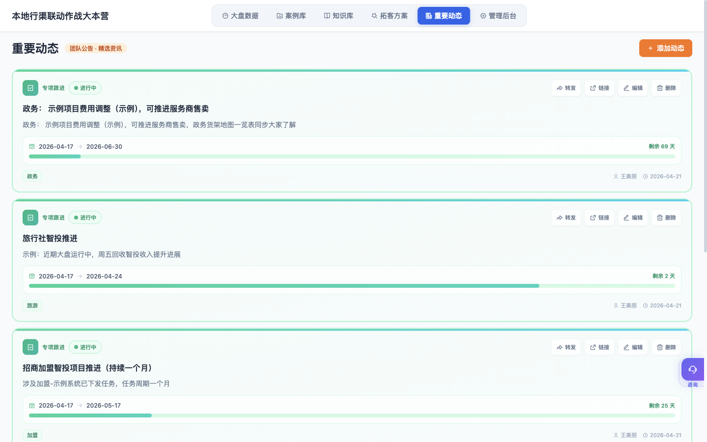

1系统概览
本系统围绕 8 大行业赛道组织所有功能，以数据、知识、方法论三层结构支撑渠道代理的日常作战。顶部 6 个主 Tab 串起全部能力，左上角是"本地行渠联动作战大本营"品牌标识，右上角是当前用户信息与角色标签。
六大主功能模块
① 大盘数据
按行业赛道展示基准线 KPI、流量占比、优化目标、品类消耗、落地页组合效果。
核心② 案例库
优秀投放/运营案例沉淀，多维搜索、行业筛选、详情弹窗查看与新增。
沉淀③ 知识库
10 大文档类型：百宝箱、风控规则、创意指南、大盘数据、投放指南等。
AI 加持④ 拓客方案
配置赛道/品类/预算 → 实时生成提示词 → 一键打开 AI 助手出方案。
提效⑤ 重要动态
团队公告、行业资讯聚合；支持发布、编辑、转发到剪贴板。
情报⑥ 管理后台
6 个子模块：行业品类、赛道展示、行业负责人、权限、访问统计、反馈。
管理员支持的 8 大行业赛道
丽人
美容、美发、美甲、医美等相关品类
旅游
跟团游、自由行、景区门票等
加盟
招商加盟全品类
综合家政（综服）
家政、保洁、维修等
商服
企业服务类
餐娱
餐饮、娱乐
零售
线下零售业态
政务
政府类投放
2权限与角色
系统采用三层权限模型：超级管理员 / 编辑权限用户 / 普通用户。编辑权限细分到「模块 × 赛道」二维粒度，任一模块有编辑权限即可看到管理后台入口。
普通用户 · 只读使用者
- 可浏览所有模块：大盘数据、案例库、知识库、拓客方案、重要动态
- 可搜索、筛选、查看详情、使用"本地小助手"AI 咨询
- 可下载大盘数据（带安全提示确认）
- 可生成拓客方案提示词并跳转助手
- 不可上传数据、新增案例/知识/动态，不可见管理后台入口
编辑权限用户 · 模块×赛道维度授权
- 拥有普通用户全部权限
- 在被授权的「模块 × 赛道」组合下，可上传数据、编辑字段、新增/删除内容
- 例：仅授权"大盘数据 × 丽人"，则只能给丽人赛道上传 Excel，其他赛道只读
- 拥有任一模块编辑权限，即可看到管理后台入口（但仅能操作自己有权的内容）
canEditModule() 与 canEditTrack() 动态显隐。超级管理员 · 全权
- 拥有所有模块、所有赛道的完整读写权限
- 独享「管理后台」完整 6 个子模块的配置权（含权限分发、行业品类增删、访问统计查看等）
- 可添加/撤销其他人的超级管理员身份、可冻结账号
权限矩阵速查
| 能力 | 普通用户 | 编辑权限用户 | 超级管理员 |
|---|---|---|---|
| 浏览 / 搜索 / 筛选 | ✓ | ✓ | ✓ |
| 使用本地小助手 AI 咨询 | ✓ | ✓ | ✓ |
| 下载大盘数据 | ✓ | ✓ | ✓ |
| 生成拓客方案提示词 | ✓ | ✓ | ✓ |
| 上传大盘数据（Excel） | — | 按授权赛道 | ✓ |
| 新增案例 / 知识 / 动态 | — | 按授权模块 | ✓ |
| 编辑大盘数据周期 | — | 按授权赛道 | ✓ |
| 查看管理后台 | — | 任一编辑权限即可 | ✓ |
| 行业品类增删 / 权限分发 | — | — | ✓ |
①大盘数据
按赛道展示行业基准线与细分维度数据。进入模块默认选中第一个赛道，顶部行业切换栏可切换到其他赛道；每个赛道都有独立的数据周期（如丽人 2026-02-01 ~ 2026-02-28），互不影响。

赛道页面布局（以丽人为例）
每个赛道页面统一由以下 6 个区块组成，顶部有目录锚点可快速跳转：
| 区块 | 内容 |
|---|---|
| 行业基准线 | 4 个 KPI 卡：下单 OG 平均转化成本、企微 OG 平均转化成本、最大消耗渠道、最优 CVR 渠道 |
| 动态数据 | 根据上传的 Excel 自动渲染的图表与表格（可选区域，未上传则隐藏） |
| 流量占比及效果 | 二级流量维度的消耗占比、ECPM、CTR、综合 CVR、转化成本 |
| 分流量优化目标 | 各流量按优化目标排序的效果对比 |
| 品类消耗占比 | 按品类拆分的投放链路、优化目标、加粉成本/表单成本、下单成本 |
| 流量 × 链路 × 落地页 | 三维筛选（OG类型 / 流量版位 / 落地页类型 / 落地页组件）交叉查询大表 |
页面可用操作
所有用户可用：
- 切换赛道、展开/收起数据模块目录
- 查看完整表格、排序与搜索（品类支持列内搜索）
- 下载数据：单模块下载 / 整体下载（Excel / CSV / PDF 三选一）
有该赛道编辑权限：
- 上传数据：顶部「上传数据」按钮（紫蓝渐变）
- 编辑数据周期：日期标签旁出现编辑按钮，支持"近双周/上月/上季度/近半年/今年"快捷选择
- 单元格就地编辑（ECPM/CTR/CVR/成本等数值字段）
②案例库
沉淀各行业的优秀投放/运营案例，支持按行业快速筛选与关键词搜索，点击卡片进入详情弹窗查看完整描述。

核心功能
- 行业筛选：顶部 8 个行业快速过滤按钮 + 全部
- 关键词搜索：支持标题、描述、投放链路等字段模糊匹配
- 详情查看：卡片点击 → 弹窗显示完整案例（投放链路、优化目标、效果数据、截图等）
- 案例统计：页面顶部实时显示"当前展示 X 条 / 共 Y 条"
新增案例（需编辑权限）
点击右上角「新增案例」按钮，打开新增表单：
- 选择所属行业 / 品类（管理员在后台配置）
- 填写案例标题、投放链路、优化目标、效果描述
- 上传截图附件（jpg/png）
- 支持 Excel 批量导入（下载模板后填充上传）
③知识库
集中管理 10 大类投放相关文档，并在顶部内嵌"咨询本地小助手"入口——AI 直接读知识库回答问题。

10 大知识类型
百宝箱
综合类经验沉淀
风控审核规则
审核红线与合规要点
创意指南
素材、脚本、文案规范
大盘数据
行业数据解读文档
投放指南
投放操作手册
智投手册
自动投放策略
链路投放指引
不同转化链路玩法
诊断指南
问题诊断与优化
拓客拓品
拓客与品类拓展方法
其他
暂未分类的文档
添加知识（需编辑权限）
- 点击右上角「添加知识」按钮
- 支持 任意格式文件上传：Excel（xlsx/xls）、CSV、PDF、图片（jpg/png/gif/webp）、Word 等
- 也支持 链接导入：粘贴 iWiki 或其他内部链接，系统自动抓取标题与摘要
- 填写标题、选择知识类型 / 所属行业 / 子行业标签
- 上传时自动检测重名，重复文档会弹窗提示是否覆盖
④拓客方案
左右分屏工作流：左边填业务配置，右边实时生成结构化提示词；确认后一键复制并自动打开"本地小助手"跑方案。

填写方案配置（左侧）
选择赛道 → 品类 → 目标（加粉/表单/下单/加企微等）→ 覆盖范围 → 目标客群 → 预算区间 → 竞品预算参考。
检查提示词预览（右侧）
提示词随配置实时更新，顶部显示字数统计；你可以直接在文本框里手动微调，也可以点「仅复制」只拿提示词自己用。
一键生成方案
点击底部紫蓝色大按钮「生成方案（复制提示词并打开智能助手）」——系统自动把提示词写入剪贴板，并从右侧弹出本地小助手面板，粘贴即问。
⑤重要动态
团队公告 + 精选行业资讯。列表按时间倒序，支持发布、编辑、转发到剪贴板直接贴到群里。

核心功能
- 通知公告栏：最新重要动态顶置展示（带橙色标签）
- 动态列表：分卡片展示标题、来源、时间、摘要
- 转发：每条动态支持一键复制富文本到剪贴板，直接粘贴到企微群
- 添加动态（需编辑权限）：点击右上角「添加动态」，填入标题 / 来源 / 链接 / 摘要 / 是否置顶
- 编辑 / 删除：自己发布或有编辑权限的动态可二次修改
⑥管理后台
只对有任一编辑权限的用户可见，拥有 6 个子 Tab 分别管控不同维度的系统配置。

| 子模块 | 能做什么 | 操作权限 |
|---|---|---|
| 行业品类管理 | 新增 / 删除 / 重命名行业赛道；维护每个行业下的品类与二级行业清单 | 超管 |
| 赛道展示管理 | 控制大盘数据模块中赛道的展示顺序、默认选中、是否隐藏 | 超管 |
| 行业负责人 | 配置每个行业的业务负责人（用于页面联系人展示、@ 通知） | 超管 |
| 权限管理 | 配置「用户 × 模块 × 赛道」三维授权；添加/撤销超级管理员 | 超管 |
| 访问统计 | 查看 PV / UV / 按模块 / 按用户的访问排行与趋势 | 编辑+ |
| 反馈管理 | 查看用户提交的问题反馈，标记处理状态与回复 | 编辑+ |
🤖本地小助手 · AI 咨询入口
基于内部 Knot 平台搭建，绑定了知识库向量索引——你问的任何问题它都会先读你上传的文档、案例、大盘数据，再回答。是整个系统最核心的"大脑"。
咨询本地小助手
智能问答 · 策略建议 · 数据解读 · 拓客方案生成
底层 URL：knot.woa.com/chat?web_key=07fb5996...&iframe=1&hidenav=1
四个调起入口
知识库顶部大卡片（主入口）
进入「知识库」Tab，紫色渐变大卡片「咨询本地小助手」是主要入口，点击任意位置或"立即咨询"按钮即可展开右侧抽屉式对话面板。
右下角悬浮按钮（全局）
所有 Tab 都可见的"咨询"悬浮按钮，让你随时随地发问——不用先跳到知识库。
拓客方案「生成方案」按钮（自动化链路）
在拓客方案 Tab 配置完条件后，点击底部大按钮——系统会自动把提示词复制到剪贴板并从右侧弹出 AI 面板，你只要在对话框里粘贴（Cmd+V）按回车即可。
拓客方案「智能助手」引导框
结果页顶部有一个"需要更精准的行业数据？"提示框，里面的按钮同样会打开 AI 面板，方便对生成的方案继续追问。
使用建议与技巧
善用「先上传后问」
助手的回答质量取决于知识库覆盖度。先把行业指南、案例、大盘数据上传齐，再来问效果最好——否则只能靠模型通用知识兜底。
让它结构化输出
提问时加一句 用表格输出 或 按 1/2/3 列点，返回的内容更容易直接用到周报、客户汇报里。
多轮追问
面板保留上下文，可以这样跟进：先问 "丽人行业最优链路是什么？" → 再问 "那加粉成本给我一个基准" → 最后 "帮我写一份华东区的拓客方案"。
关闭 / 重开保留记忆
点右上角 × 关闭抽屉不会清空会话；再次打开延续上下文。如果想重新开始一段，直接在助手里说「清空」或新建对话。
📥上传数据 SOP
以大盘数据上传为例（支持任意格式智能识别），其他模块上传流程基本一致。
进入目标赛道
在大盘数据 Tab 顶部，点击你有编辑权限的赛道。
点击「上传数据」按钮
右上角紫蓝渐变按钮（无权限时不显示）。
选择文件
拖拽或点击上传区；支持 Excel（xlsx/xls）/ CSV / 图片 / PDF。
/api/dashboard/smart-update——自动识别字段与数据周期，不强要求严格模板。确认数据周期
系统自动从文件内容或文件名识别周期（如 2026-02-01 ~ 2026-02-28），不准确时可手动修改。
提交
上传成功 Toast 提示 → 页面自动刷新对应赛道的数据渲染（无需手动刷新浏览器）。
📐数据格式规范
推荐使用标准 Excel 模板上传，字段命名下面列的约定可以最大化识别成功率。
大盘数据 · 推荐字段
常见规范要点
- 百分比字段：直接写百分数（1.14% / 60.57%），不要用小数（0.0114）
- 货币字段：纯数字，单位统一为"元"，不要混用万元
- CTCVR / 综合 CVR：如数据源是 ‱（万分之一），上传前需折算为 %
- 命名建议：
丽人_月度_2026-02.xlsx，便于系统自动识别赛道与周期 - 图片/PDF：可作为补充素材上传，会出现在"动态数据"区域
📤下载与信息安全
三种下载格式
| 格式 | 特点 | 建议使用场景 |
|---|---|---|
| Excel（默认） | 保留表头、支持二次处理 | 拿回本地再分析、做透视表 |
| CSV | 轻量、跨平台通用 | 导入其他 BI 工具或脚本处理 |
| 快照存档，不可编辑 | 归档、对外不可改动的汇报 |
下载前的安全确认
每次下载都会弹出信息安全提示，需确认以下事项：
- 本数据仅供内部业务参考使用，严禁对外传播
- 不可将数据上传至外部云盘、公共聊天工具
- 下载记录会被访问统计模块捕获
❓常见问题
Q为什么我看不到「管理后台」Tab？
- 想要编辑权限：联系你所在赛道的超级管理员，在「管理后台 → 权限管理」分配
- 如果你已经分配了但仍看不到：刷新浏览器，或退出重新登录（权限接口有本地缓存）
Q为什么没有「上传数据」按钮？
- 你没有该赛道的编辑权限（哪怕有其他赛道也不行）
- 赛道被管理员在"赛道展示管理"中设置为只读展示
- 超级管理员可无条件看到
Q权限调整后多久生效？
Q支持上传哪些文件格式？
- 大盘数据：Excel（xlsx/xls）、CSV、图片（jpg/png/gif/webp）、PDF 等任意数据格式，系统智能识别
- 知识库：同上，外加链接导入（iWiki 等内部链接）
- 案例库：单条填表新增，或 Excel 批量导入
- Skill / 行业动态：对应类型文件
Q上传后页面为什么没更新？
loadDashboardData()）。如果超过 5 秒仍无变化：
- 检查上传成功 Toast 是否出现
- 手动切换到其他赛道再切回来，触发重新加载
- 强制刷新浏览器
- 查看浏览器控制台是否有 API 报错
QCTCVR / ‱（万分之一）单位怎么上传？
Q本地小助手回答不准怎么办？
- 检查知识库里是否上传过对应主题的权威文档
- 在提示词里加"请基于知识库中 XX 文档回答"
- 用"先上传后问"的策略：缺啥补啥
- 关键决策不要只依赖 AI，以原始数据为准
Q下载的 Excel 打开是乱码？
📅更新日志
v1.0 · 2026-04-22（本次首版）
- 对照 With 平台「本地行渠联动系统（渠道版）」版本 v171 的源代码与预览界面完整梳理
- 覆盖 6 大模块、8 大行业赛道、10 类知识文档、3 层权限、6 个管理后台子模块
- 独立成章说明 AI 咨询入口「本地小助手」的 4 种调起方式与使用建议
- 截图素材来源于实际预览界面